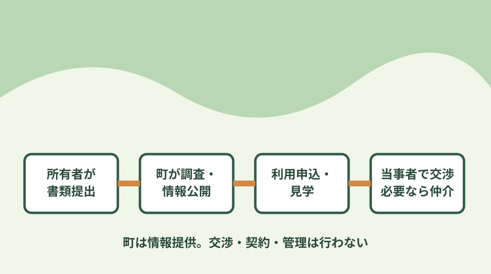
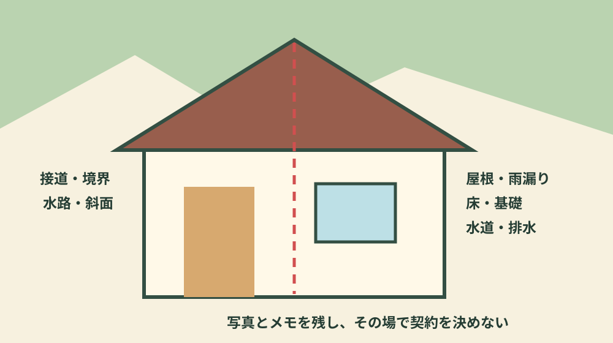
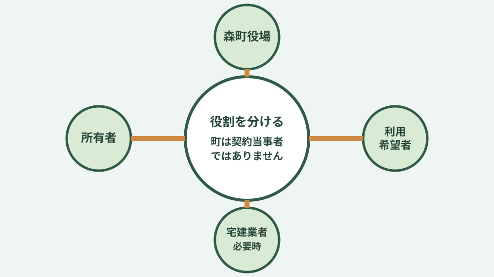

森町空き家・空き地バンク｜登録・利用・注意点
森町の空き家・空き地バンクは、町内の空き家・空き地を売りたい・貸したい所有者の情報を町が登録し、買いたい・借りたい人へ公開する制度です。町が物件を買い取ったり、交渉・契約・管理を代行したりする制度ではありません。この違いを最初に理解し、所有者側と利用希望者側の手順を分けて進めます。
1. 空き家バンクで町がすること・しないこと
森町公式の制度概要では、町内にある空き家・空き地の情報を登録・公開し、移住・定住や地域での活用につなげる仕組みと説明されています。所有者が登録を申し込み、町が必要な調査と審査を行い、登録後にホームページで情報を提供します。利用希望者から申込みがあれば、その情報が所有者へ伝えられます。
一方、町は物件の仲介、交渉、契約、管理を行いません。物件を登録した後も、換気、除草、雨漏り確認、災害後の点検、近隣への対応は所有者の役割です。見学後の価格や修繕、引渡し条件も、所有者と利用希望者が話し合います。宅地建物取引業者へ仲介を依頼することは可能で、その場合は報酬が発生します。
この役割分担を曖昧にすると、「町が建物を検査して保証した」「町が契約トラブルを解決する」「登録すれば管理を任せられる」という誤解につながります。町の現地調査・審査と、購入者が行う建物調査や権利確認は目的が違います。公開情報は候補を知る入口であり、契約判断の全資料ではありません。
2026年8月9日に確認した公式の物件公開ページは、2026年7月28日更新と表示され、賃貸物件と売却物件に分けて掲載されていました。物件情報は随時変わるため、このページに件数や価格を固定して転載しません。最新の公開状況、交渉中、成立などの表示を公式ページで確認し、気になる物件があっても所有者宅へ無断で行かないでください。

2. 売りたい・貸したい所有者の登録手順
所有者は、まず物件が森町内にある空き家または空き地かを確認します。公式案内では、抵当権付きの空き家や空き農地など、物件状況によって登録できない場合があるとされています。登記、共有、土地と建物の所有者、農地、すでに依頼している仲介の有無を隠さず整理し、判断が難しいときは申込前に定住推進課移住交流係へ相談します。
登録時は、登録申込書（様式第1号）、同意書（様式第2号）、チェックリストを定住推進課へ提出する流れが公式ページに示されています。土地と建物の所有者が異なる場合は土地所有者の同意が必要です。共有物件や所有者本人以外が動く場合は、委任や同意の扱いを先に確認します。書類名だけを見て自己判断せず、最新版を公式ページから取得します。
町のチェックリストには、一戸建てであるか、水道・電気・ガス等を使える状態か、雨漏り、床、シロアリ、基礎、残置物、換気、除草、接道、災害リスク、登記、境界などの確認欄があります。これは申込日に慌てて丸を付ける紙ではありません。現地を見て、分からない項目は「分からない」とし、修繕履歴や写真を用意します。
提出後、町が必要な現地調査を行い、審査を経て登録・公開する流れです。申し込めば必ず掲載されるとは限りません。流通の見込みや物件状態によって登録できないことがあるため、掲載前に買主や借主を当て込んで片付けや転居の日程を確定しない方が安全です。公開する住所、写真、価格・賃料、残置物、引渡し時期も確認します。
登録後に内容が変わった場合は、変更や抹消の届出を行います。雨漏りや設備故障が発生した、価格を変更した、相続で所有者が変わった、別の経路で契約が決まったなど、公開情報と現況が違う状態を放置しません。見学前にも換気と安全確認を行い、危険な床や階段、ハチや害獣、倒木のおそれがあれば事前に伝えます。
所有者が遠方に住む場合は、町からの連絡を受ける人、見学の立会い、鍵の保管、台風や大雨後の確認を先に決めます。親族へ任せる場合も、できる範囲と連絡方法を書きます。連絡先が変わった、入院などで対応できない期間がある、冬季は水道を止めるといった事情も、公開情報と見学日程に影響します。登録は管理の終わりではなく、利用者へ現況を正しく伝える期間の始まりです。
価格や賃料を考える際は、思い出や取得時の金額だけで決めません。土地と建物の状態、修繕、残置物、境界、接道、需要を整理し、必要なら民間事業者へ根拠を聞きます。登録後に問い合わせがない場合も、単純に値下げする前に、写真・説明・見学条件・建物状態のどこが判断を難しくしているかを確認します。
3. 買いたい・借りたい人の利用手順
利用希望者は、まず公式の物件公開ページで賃貸・売却の区分と詳細資料を見ます。写真や価格だけで選ばず、地区、建物年数、土地、上下水道、農地、駐車、改修の必要性を確認します。森町で暮らす予定なら、候補地から勤務先、学校、病院、買い物先までの動線も地図で仮置きします。
見学や交渉を希望する場合、公式案内では利用申込書（様式第8号）と同意書（様式第2号）を定住推進課へ提出します。申込人と所有者が別の場合の委任状も公開されています。公開ページには、空き家・空き地の優先交渉権は先着順で、先の人の結果が分かるまで次の人は交渉できないとの注意書きがあります。最新運用は提出時に再確認してください。
先着であることと、急いで契約することは別です。利用申込は物件の安全性や権利、修繕費を保証しません。見学では屋根、天井、床、基礎、建具、給排水、電気、ガス、浄化槽、残置物、境界、道路、隣地、高低差を確認します。分からない箇所は写真と質問へ残し、専門家の調査が必要かを判断します。
賃貸なら、修繕を誰が負担するか、設備が故障したときの連絡先、庭や水路の管理、契約期間、退去時の原状回復を確認します。購入なら、所有権、抵当権、境界、接道、増改築、未登記部分、農地、引渡し、契約不適合に関する条件を確認します。口頭の「たぶん使える」「昔からこの境界」だけで契約書へ進まないことが重要です。
町の制度案内では、空き家・空き地バンクで移住した人へ町内会への加入と地区行事への参加をお願いしています。法的な契約条件と地域での暮らし方を同じものとして扱わず、加入方法、役割、年間行事は候補地区で確認します。移住後の関係を想像するため、可能なら異なる季節・曜日に複数回来町します。

4. 見学・交渉前に確認する建物、土地、農地
建物では、玄関に入った印象だけで決めません。外から屋根、雨樋、外壁、基礎、傾き、植栽、害獣の痕跡を見ます。室内では天井の染み、床の沈み、建具、におい、換気、分電盤、給湯、水回りを確認します。空き家期間が長い設備は、通電や通水ができても継続使用できるとは限りません。検査や試運転の条件を所有者と相談します。
土地では、地番、面積、境界、接道、私道、水路、擁壁、駐車、車両の進入を見ます。空き地で住宅建築を考えるなら、「更地だから建つ」とは限りません。町のチェックリストにも接道、土砂災害警戒区域、がけ地、急傾斜、地目、建築可能性の確認があります。所在地を示して森町の担当窓口と建築士へ相談します。
農地付き物件では、住宅と農地を一括して自由に売買できるとは考えません。森町は「空き家付き農地の取得について」の公式ページを公開し、随時相談を受け付けています。農地の取得・利用は農業委員会の確認が必要です。家庭菜園のつもりでも、対象地の扱い、営農、周辺農地への影響を確認します。
災害リスクは、森町防災ハザードマップ、静岡県GIS、現地の高低差と避難路を合わせて見ます。ハザードマップの色がないことだけで安全を保証できず、色があることだけで利用不可とも決まりません。建物の位置、敷地内の高低差、裏山、水路、橋、通行止め時の代替経路を具体的に確認します。
境界、建物状態、費用に不明点が残る場合は、契約前に専門家へ相談します。宅地建物取引業者、土地家屋調査士、建築士、司法書士などは役割が違います。誰か一人に「全部大丈夫」と言ってもらうのではなく、質問を分けて回答と資料を残します。調査費用がかかる場合は、範囲と成果物を事前に確認します。
見学時は、所有者側と利用希望者側で同じチェック表を持つと、説明漏れを減らせます。各項目へ「現地で確認」「資料で確認」「未確認」「修繕予定」の印を付け、撮影した写真番号と対応させます。水道を流せない、床下へ入れない、境界資料が見つからないなど、その日に確認できなかったことも重要な情報です。後日誰が何を調べ、いつ回答するかを決めます。
周辺確認では、隣地へ無断で入らず、公道から水路、斜面、電柱、車の転回、家庭ごみの集積場所まで見ます。日照や音は時刻で変わるため、一度の内見だけで断定しません。所有者も、地域の行事や管理の役割について分かる範囲を説明し、分からないことを事実のように補わないことが、後の信頼につながります。
5. 価格・補助・残置物・改修費を分ける
公開価格は入口であり、その金額だけで住める状態になるとは限りません。購入なら登記、仲介、税、保険、残置物、修繕、設備更新、引っ越しを分けます。賃貸なら初期費用、仲介、保証、保険、修繕負担、庭や水路の管理を分けます。古い住宅は、屋根や水回りなど複数工事が重なる可能性を見込みます。
森町は、空き家・空き地バンクへ登録可能な一戸建てについて、家財道具等の処分や改修工事にかかる費用を支援する案内を公開しています。制度は予算の範囲、対象者、対象物件、申請時期、着手前申請などの条件が変わり得ます。補助を見込んで先に処分や工事を契約せず、見積書と物件情報を用意して担当課へ確認します。
所有者側は、残置物を「全部そのまま引き渡す」と一言で済ませず、必要品、処分品、危険物、仏壇、個人情報、借り物を分けます。利用希望者側も、残置物付き価格が得かどうかを処分量と費用から判断します。誰がいつまでに何を片付けるか、契約書や合意書で明確にします。
改修では、見た目を整える工事と、雨漏り、構造、電気、給排水、浄化槽、断熱など暮らしを支える工事を分けます。DIYを前提にする場合も、資格や届出が必要な工事、構造に関わる工事は専門家へ確認します。工事中に追加が出た場合の扱いも見積段階で聞きます。
6. 所有者・利用希望者・町・宅建業者の役割
所有者は、分かっている不具合、権利関係、残置物、管理状況を正直に示します。利用希望者は、自分の利用目的と資金、改修できる範囲を整理し、現地を確認します。町は申込・登録・情報提供の窓口です。宅地建物取引業者へ仲介を依頼する場合は、条件調整、重要事項説明、契約など依頼範囲を確認します。
当事者間で直接進める場合も、契約書を作らず口約束で鍵や代金を渡さないようにします。賃貸借と使用貸借、売買と贈与では法的・税務上の意味が違います。親族や知人同士でも、物件、金額、支払、引渡し、修繕、残置物、解除、連絡方法を文書にします。
本サイト運営会社へ相談する場合も、町の制度利用とは別の民間サービスです。相談したことで空き家バンクの順番が有利になったり、町の審査が変わったりすることはありません。まだ売るか貸すか決まっていない場合は、名義、現況、家族意向、維持費を整理する相談から始められます。契約や費用は依頼前に説明を受けます。

7. 森町空き家・空き地バンクのよくある質問
森町空き家・空き地バンクへ登録すると町が売ってくれますか
町は物件情報を登録・公開しますが、交渉、契約、仲介、物件管理は行いません。申込みがあった後は当事者間で進め、必要なら宅地建物取引業者へ仲介を依頼します。
見学したい場合は物件へ直接行ってよいですか
無断で敷地へ入ったり所有者を訪ねたりせず、公式の利用申込書と同意書を定住推進課へ提出します。公開ページでは優先交渉権が先着順と案内されているため、最新状況と手順を窓口へ確認します。
家財が残る空き家も登録できますか
物件状態を町が確認します。登録可能な一戸建ての残置物処分や改修工事に関する補助案内もありますが、対象、予算、申請時期を確認し、交付決定前に処分や工事を始めないよう注意します。
空き家付き農地も一緒に買えますか
農地は住宅地とは別の手続きがあります。物件を特定して森町農業委員会事務局へ事前相談し、取得や利用の条件、周辺農地への影響を確認します。
登録価格は町が決めますか
町は情報提供を行う立場です。所有者は物件状態、残置物、境界、修繕などを整理し、価格・賃料の根拠を確認します。必要に応じて宅地建物取引業者へ相談します。
8. 申込前のチェックリスト・公式情報源
所有者は、登記名義、共有者、土地と建物の所有者、抵当権、農地、境界、接道、雨漏り、床、設備、残置物、除草、公開価格を確認します。利用希望者は、利用目的、資金、改修予算、勤務・学校・病院への動線、災害リスク、見学時の質問を整理します。双方とも、口頭回答だけでなく資料名と確認日を残します。
提出前に書類の控えを取り、物件写真には撮影日と場所を付けます。電話で聞いた内容は担当窓口、日時、回答、次の期限をメモします。所有者と利用希望者の認識が違った項目は、曖昧なまま消さず、契約前の確認事項として残してください。小さな記録が、交渉中の行き違いと同じ調査の繰り返しを減らします。
このページでまとめて確認する項目
同じ手続きや確認順序で解決できる質問を、ページを分けずにまとめています。
- 空き家バンク
- 空き家 管理
- 空き家 草刈り
- 空き家 火災
- 空き家 放置
最終確認日：2026-08-06 ／ 公開物件、様式、補助、受付状況は変わります。申込時に最新の公式ページを確認してください。